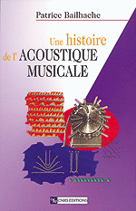

Une histoire de
l'acoustique musicale
Patrice Bailhache

Une histoire de
|
|
|  |
Une histoire de l'acoustique musicale Auteur : Patrice Bailhache Éditeur : CNRS - ÉDITIONS ISBN : 2-271-05840-6 |
Cet ouvrage original, retrace avec clarté dans ses étapes les plus significatives, de l'Antiquité jusqu'à nos jours, l'évolution des théories scientifiques de la musique occidentale.
Au début, par des expériences sur les cordes vibrantes, les Pythagoriciens découvrent que les consonances, octave, quinte et quarte, doivent être associées à des rapports de nombres entiers. Mais l'Antiquité a aussi connu une approche intuitive, non mathématique, à laquelle est attaché le nom d'Aristoxène de Tarente.
À la Renaissance et au début de l'âge classique, de nouvelles consonances sont admises, les tierces et les sixtes, qu'il s'agit de justifier. Malgré l'apparition de théories au caractère peu scientifique (Zarlino, Kepler), l'analyse physique commence à voir le jour, avec Galilée et Mersenne notamment. Le XVIIIe siècle marque un tournant décisif : sous l'influence du courant empiriste, l'expérience auditive est désormais réellement prise en compte (d'Alembert), même si l'approche mathématique se développe encore comme en apothéose (Euler).
Mais les progrès sont bien plus considérables au siècle suivant grâce au médecin et physicien Helmholtz. La barrière du tympan est enfin franchie et l'acoustique n'est plus seulement physico-mathématique, mais aussi physiologique. L'apport du XXe siècle est principalement celui de la psychologie expérimentale.
On voit, en définitive, comment l'histoire de l'acoustique musicale a été tributaire de deux évolutions parallèles, celle de la musique bien sûr et celle des sciences, mathématiques, physique, médecine, psychologie...
Patrice Bailhache, ingénieur de formation, docteur ès lettres (philosophie), est professeur à l'Université de Nantes. Ses recherches portent notamment sur l'histoire de la mécanique, la logique et l'histoire des théories scientifiques de la musique. Il est l'auteur de l'ouvrage Leibniz et la théorie de la musique (1992).
|
Introduction Chapitre premier. Antiquité grecque.
Chapitre 2. Renaissance.
Chapitre 3. Âge classique.
Chapitre 4. Le siècle des Lumières.
|
Chapitre 5. Helmholtz.
Chapitre 6. XXe siècle.
Conclusion.
|